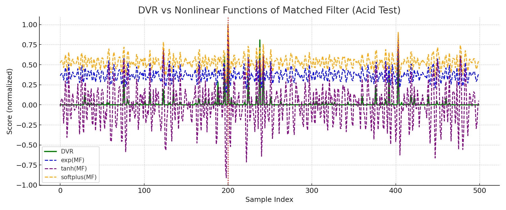
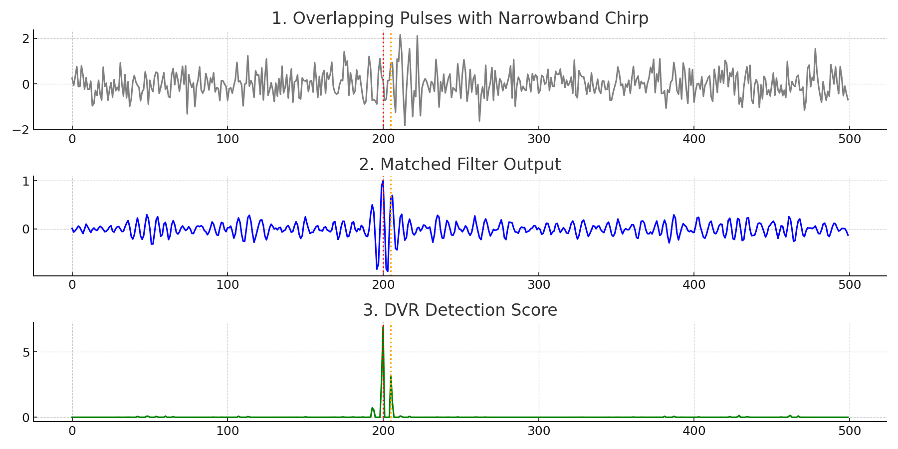

DVR-Based Detection: Better Than Matched Filter
This new detection algorithm uses local projections to significantly improve pulse detection in noisy environments.
- ✅ 25–28 dB SNR improvement over matched filter
- ✅ Local noise adaptation (not fooled by overlap)
- ✅ Mathematically distinct from simple nonlinear filters

Test performed under high noise to show that DVR is structurally different —
not just a nonlinear transformation like exp(MF), tanh(MF), or softplus(MF).
2. Overlapping Pulses – Narrowband Case

Matched filter creates a falsely amplified peak. DVR remains true to signal structure and suppresses false energy merging.
Request Demo / Licensing